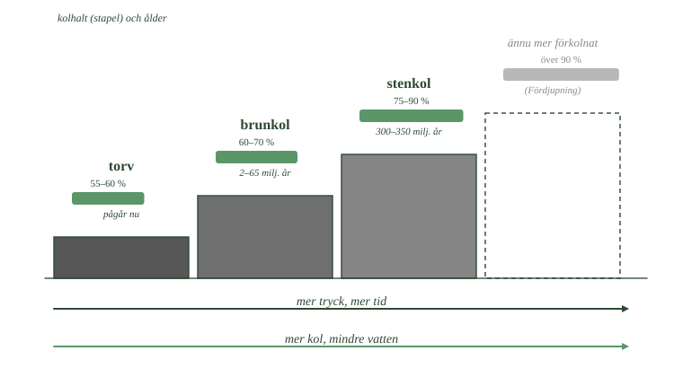
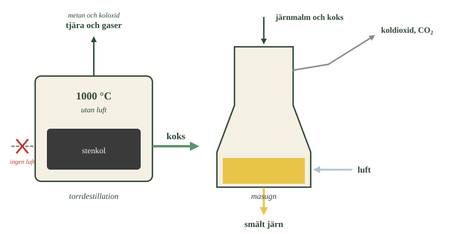
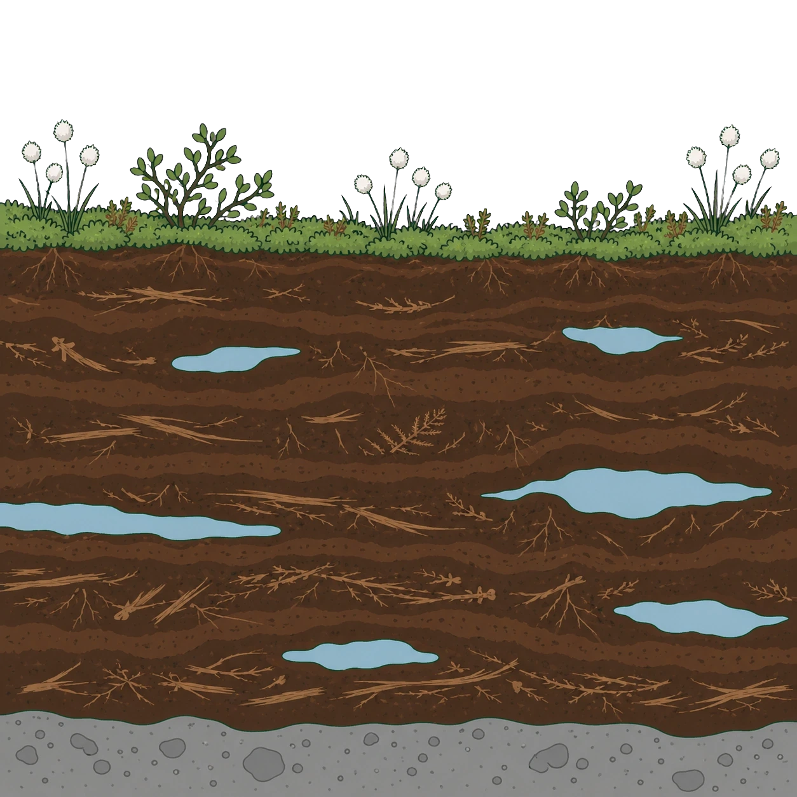

- Vad mer än kol innehåller det man bryter i en kolgruva?
- När och av vad bildades stenkolet?
- Vad skiljer brunkol från stenkol?
- Varför måste brunkol torkas?
- Vad händer med kolhalten ju längre omvandlingen går?
Kol är inte rent kol
Det man bryter i en kolgruva är inte grundämnet kol i ren form.
Det är ett material som mest består av kol, men som också innehåller kolväten, vatten, svavel och olika mineralämnen.
Hur stor andelen rent kol är varierar mellan olika sorter. Och det är just den andelen som avgör hur bra bränslet är.
Stenkol bildades under karbon
Stenkol bildades av växter som levde för 300 till 350 miljoner år sedan.
Den perioden kallas karbon — namnet kommer av det latinska ordet för kol, eftersom det var då kolet bildades.
På den tiden fanns enorma sumpskogar med ormbunksträd och andra stora växter. När de dog sjönk de ner i syrefattiga träsk. Nedbrytningen blev ofullständig, och lager på lager av växtmaterial pressades samman under högt tryck.
Stenkol innehåller 75 till 90 procent kol. Ju äldre kolet är, desto högre är andelen.
Stenkol drev ångmaskinerna under industrialiseringen. I dag används det mest till stålproduktion och elproduktion.
Brunkol är yngre och blötare
Brunkol bildades betydligt senare, för 2 till 65 miljoner år sedan.
Eftersom omvandlingen har pågått kortare tid är kolhalten lägre — 60 till 70 procent. Det är därför materialet är brunt och inte svart.
Brunkol innehåller också mycket vatten och måste torkas innan det kan användas. Efter torkningen ligger kolhalten på ungefär 75 procent, men energivärdet är ändå lägre än stenkolets.
Kolhalten avgör kvaliteten
De olika sorterna bildar en serie: torv, brunkol, stenkol.
Ju längre omvandlingen har gått, desto mer vatten och andra ämnen har pressats ut. Och desto högre blir kolhalten.
Hög kolhalt betyder mer energi per kilo. Men det betyder också mer koldioxid per kilo — det är ju samma kol som brinner.
- Hur ändras staplarna när du går uppför trappan?
- Vad försvinner ur materialet på vägen?
- Vilket steg pågår fortfarande i Sverige i dag?

- Vad mer än kol innehåller det man bryter i en kolgruva?
- När och av vad bildades stenkolet?
- Vad skiljer brunkol från stenkol?
- Varför måste brunkol torkas?
- Vad händer med kolhalten ju längre omvandlingen går?
Kol är det fossila bränsle som har använts längst och som ger mest koldioxid per energienhet. Ungefär 25 procent av världens energi kommer från förbränning av kol.
Men "kol" är inte ett enda ämne. Det finns flera sorter, bildade under olika tidsperioder och med olika mycket kol i sig. Och kolet används inte bara som bränsle — utan koks skulle vi inte ha något stål.
Kol är inte rent kol
Det man bryter i en kolgruva är inte grundämnet kol i ren form.
Det är ett material som till stor del består av kol, men som också innehåller kolväten, vatten, svavel och olika mineralämnen. Hur stor andelen rent kol är varierar mellan olika sorter, och det är just den andelen som avgör kvaliteten.
Stenkol bildades under karbon
Stenkol bildades av landväxter som levde för 300 till 350 miljoner år sedan, under en period som kallas karbon — namnet kommer av att det var då kolet bildades.
Då fanns enorma sumpskogar med ormbunksträd och andra växter. När de dog sjönk de ner i syrefattiga träsk, där nedbrytningen blev ofullständig. Lager på lager av växtmaterial pressades samman under högt tryck.
Stenkol innehåller 75 till 90 procent kol. Ju äldre kolet är, desto högre är andelen.
Stenkol drev ångmaskinerna under industrialiseringen. I dag används det framför allt i stålproduktion och elproduktion.
Brunkol är yngre och blötare
Brunkol bildades betydligt senare, för 2 till 65 miljoner år sedan.
Eftersom omvandlingen pågått kortare tid är kolhalten lägre, 60 till 70 procent. Det är därför materialet är brunt i stället för svart.
Brunkol innehåller dessutom mycket vatten och måste torkas innan det kan användas. Efter torkning ligger kolhalten på ungefär 75 procent, men energivärdet är ändå lägre än stenkolets.
Kolhalten avgör kvaliteten
De olika sorterna bildar en serie: torv, brunkol, stenkol.
Ju längre omvandlingen har gått, desto mer vatten och andra ämnen har pressats ut, och desto högre är kolhalten. Och ju högre kolhalt, desto mer energi per kilo.
Men också desto mer koldioxid per kilo — det är samma kol som brinner.
---
Kolserien är en enda process som avbrutits vid olika punkter
Standardtexten presenterar torv, brunkol och stenkol som tre sorters kol med olika kolhalt. Det är korrekt, men uppdelningen är skarpare i texten än i verkligheten.
De tre är inte tre ämnen. De är samma material i tre stadier av en process som aldrig är avslutad.
Processen heter förkolning och innebär att vatten, syre och väte gradvis pressas och drivs ut ur det organiska materialet, medan kolet blir kvar. Ju längre den gått, desto mindre av allt annat finns kvar.
Det finns ett fjärde stadium som texten inte nämner: antracit, med över 90 procent kol. Antracit är så förkolnat att det knappt ryker när det brinner, och det brinner med nästan ingen låga alls — de flyktiga ämnena som ger en låga är borta.
Vad som avgör var ett kolfält hamnar i serien är inte bara ålder, utan hur djupt det begravts och hur varmt det blivit. Ett ungt kol som hamnat djupt kan vara mer förkolnat än ett gammalt som legat nära ytan.
Det förklarar också varför koks liknar antracit. Torrdestillationen gör på några timmar vid 1000 grader det som naturen gör på miljontals år: driver ut allt flyktigt och lämnar kolet.
Om modellen. Att dela in kol i sorter är praktiskt, och gränserna används i handeln med kol. Men naturen ritar inga gränser. Mellan brunkol och stenkol finns allt däremellan, och vilken etikett ett kolfält får är delvis en fråga om var någon valt att dra linjen.
- Varför hettas stenkolet utan tillgång till luft?
- Vad drivs ut ur stenkolet, och vad blir kvar?
- I vilken form finns järnet i berggrunden?
- Vad är det koksen gör i masugnen?
- Varför kan koldioxiden från ståltillverkning inte renas bort?
Upphettning utan luft
Stenkol går bra att elda med. Men för att framställa järn duger det inte — då behövs ett renare material.
Det får man genom torrdestillation.
Stenkol hettas upp till ungefär 1000 grader utan tillgång till luft. Eftersom det inte finns något syre kan kolet inte brinna. I stället drivs de ämnen ut som förångas lätt.
Det som avgår är tjära och gaser, framför allt metan och koloxid. Gaserna kan användas som bränsle.
Det som blir kvar är koks
Kvar i ugnen ligger koks — ett poröst material som är nästan rent kol.
Koks är lättare än stenkol och ryker inte lika mycket när det brinner. Det beror på att de flyktiga ämnena redan är borta.
- Vilken av de två ugnarna får luft, och vilken får det inte?
- Vad kommer ut upptill ur masugnen?
- Var tar syret från järnmalmen vägen?

Koks används för att framställa järn
Järn finns inte som järn i marken.
Det man bryter är järnmalm, där järnet sitter bundet till syre. För att få användbart järn måste syret bort.
Det är där koksen kommer in. Kol binder syre hellre än järn gör. I masugnen tar kolet syret från järnmalmen, och kvar blir smält järn.
Men syret försvinner inte. Det följer med kolet och bildar koldioxid.
Det är därför ståltillverkning ger så stora utsläpp. Koldioxiden är inte ett spill som kan renas bort — den är en del av själva reaktionen. Syret måste ta vägen någonstans.
- Varför hettas stenkolet utan tillgång till luft?
- Vad drivs ut ur stenkolet, och vad blir kvar?
- I vilken form finns järnet i berggrunden?
- Vad är det koksen gör i masugnen?
- Varför kan koldioxiden från ståltillverkning inte renas bort?
Torrdestillation driver ut det flyktiga
Stenkol går att använda direkt som bränsle, men för järnframställning duger det inte. Då krävs ett renare material.
Det framställs genom torrdestillation. Stenkol hettas upp till ungefär 1000 grader utan tillgång till luft. Eftersom det inte finns något syre kan kolet inte brinna. I stället drivs de flyktiga ämnena ut.
Det som avgår är tjära och gaser, framför allt metan och koloxid. Gaserna kan i sin tur användas som bränsle.
Det som blir kvar är koks
Kvar i ugnen ligger koks — ett poröst, nästan rent kolmaterial.
Koks är lättare än stenkol och ryker inte lika mycket när det brinner, eftersom de flyktiga ämnena redan är borta.
Koks används för att framställa järn
Järn finns inte som järn i marken. Det sitter bundet till syre i järnmalm.
För att få fram järn måste syret bort, och det är där koksen kommer in. Kolet binder syret hellre än järnet gör. I masugnen tar kolet syret från järnmalmen, och kvar blir smält järn.
Men syret måste ta vägen någonstans, och det gör det: det bildas koldioxid.
Det är därför ståltillverkning ger så stora utsläpp. Koldioxiden är inte ett spill som kan renas bort — den är en del av själva reaktionen.
---
Kolet reagerar inte direkt med järnmalmen
Standardtexten säger att kolet i masugnen tar syret från järnmalmen. Det är rätt i sak, men det sker inte som texten antyder — det är inte koksen själv som möter malmen.
I masugnen sker det i två steg.
Först reagerar koksen med syre från den inblåsta luften. Vid de höga temperaturerna bildas inte koldioxid utan kolmonoxid, CO — samma ämne som annars är en farlig biprodukt.
Det är kolmonoxiden som gör arbetet. Den stiger uppåt genom malmen och tar syret ur järnoxiden:
Varför gör man så? Därför att kolmonoxid är en gas. En gas kan tränga in i varje por i malmen och nå järnoxiden överallt. Fast koks kan bara röra malmen där bitarna råkar ligga mot varandra.
Det är alltså kontaktytan som avgör. Samma princip som gjorde aktivt kol användbart i delkapitel 1: en reaktion sker där ämnena möts, och en gas möter allt.
Om modellen. "Kolet tar syret från järnet" stämmer om man ser på vad som går in och vad som kommer ut. Men mellan dem finns ett steg, och det steget förklarar varför masugnen är byggd som den är — hög, med luft som blåses in nedtill och gas som stiger genom malmen ovanför.
- Var bildas torv, och varför just där?
- Vad blir torven av om den begravs?
- Hur stor del av Sveriges yta är torvmark?
- Vilka funktioner har torvmarkerna utöver att lagra kol?
- Varför används så lite torv som bränsle?
Torv är halvt förmultnade växter
Torv bildas i syrefattiga våtmarker — i mossar och kärr.
Där dör växter varje år, men syrebristen gör att de bara delvis bryts ner. Materialet samlas på hög, år efter år, och blir till torv.
Torv är alltså det första steget. Om torven begravs under sediment och utsätts för tryck under miljontals år blir den så småningom brunkol.
Torvmarker täcker en sjundedel av Sverige
Ungefär 15 procent av Sveriges yta är torvmark. Det är alltså ingen liten företeelse — det är en stor del av landet.
Torvmarkerna gör flera viktiga saker.
De lagrar kol. All den halvt nedbrutna växtmassan är kol som inte finns i luften.
De håller kvar vatten i landskapet och påverkar hur vatten rör sig mellan mark och vattendrag.
Och de är livsmiljö för arter som inte finns någon annanstans.
En torvmark som dikas ut eller bryts släpper ifrån sig det kol den lagrat.
- Kan du se rester av växtdelar i torvlagret?
- Var i bilden finns vattnet?
- Vad tror du händer med torven om marken dikas ut och vattnet försvinner?

Som bränsle är torv marginellt
I Sverige står torv för ungefär 0,5 procent av bränsleanvändningen. Det är nästan ingenting.
Skälet är att torv är besvärligt. Råtorv innehåller 80 till 90 procent vatten. Den måste torkas, och torkning kostar både tid och energi.
Efter torkning ligger kolhalten på 55 till 60 procent — alltså lägre än i brunkol.
Torv innehåller dessutom svavel och giftiga ämnen, precis som kol, och de frigörs vid förbränning.
- Var bildas torv, och varför just där?
- Vad blir torven av om den begravs?
- Hur stor del av Sveriges yta är torvmark?
- Vilka funktioner har torvmarkerna utöver att lagra kol?
- Varför används så lite torv som bränsle?
Torv är delvis förmultnade växtdelar
Torv bildas i syrefattiga våtmarker — i mossar och kärr.
Där dör växter varje år, men syrebristen gör att de bara delvis bryts ner. Materialet samlas på hög, år efter år, och blir till torv.
Torv är alltså det första steget. Begravs den under sediment och utsätts för tryck under miljontals år blir den så småningom brunkol.
Torvmarker täcker en sjundedel av Sverige
Ungefär 15 procent av Sveriges yta är torvmark. Det är en stor del av landet.
Torvmarkerna har flera viktiga funktioner. De lagrar stora mängder kol, de påverkar vattenbalansen i landskapet genom att hålla kvar vatten, och de är livsmiljö för arter som inte finns någon annanstans.
En torvmark som dikas ut eller bryts släpper ifrån sig det kol den lagrat.
Som bränsle är torv marginellt
I Sverige står torv för ungefär 0,5 procent av bränsleanvändningen.
Skälet är att torv är besvärligt. Råtorv innehåller 80 till 90 procent vatten och måste torkas, vilket kostar både tid och energi. Efter torkning ligger kolhalten på 55 till 60 procent, alltså lägre än brunkolets.
Torv innehåller dessutom, precis som kol, svavel och giftiga ämnen som frigörs vid förbränning.
En våtmark som dikas ut byter sida
Standardtexten säger att en torvmark som dikas ut släpper ifrån sig det kol den lagrat. Det låter som att kolet rinner ut. Det gör det inte — det bryts ner, och det är dräneringen som gör det möjligt.
Så länge torven ligger under vatten når inget syre ner. Nedbrytarna arbetar långsamt och ofullständigt, och därför fortsätter torven att växa. En växande torvmark tar upp kol ur atmosfären, år efter år.
Dikas marken ut sjunker vattennivån och syre når ner i torven. Nu kan nedbrytarna arbeta som vanligt, och den torv som byggts upp under tusentals år bryts ner på årtionden. Kolet blir koldioxid.
En och samma torvmark kan alltså vara antingen en kolsänka eller en kolkälla. Vad som avgör är vattnet.
Det är därför utdikade torvmarker räknas med i länders utsläpp, och därför man på senare år börjat lägga igen diken för att låta gamla våtmarker återvätas. Sverige har ungefär en fjärdedel av sina torvmarker utdikade, framför allt för skogsbruk och jordbruk.
Om modellen. Standardnivån behandlar torvmarken som ett lager — något som innehåller kol. Det är sant, men det viktigare är att den är en process. Den pågår åt ett håll eller åt det andra, och människan bestämmer åt vilket genom att styra vattnet.
Laddar övningskort…
Laddar frågor ...